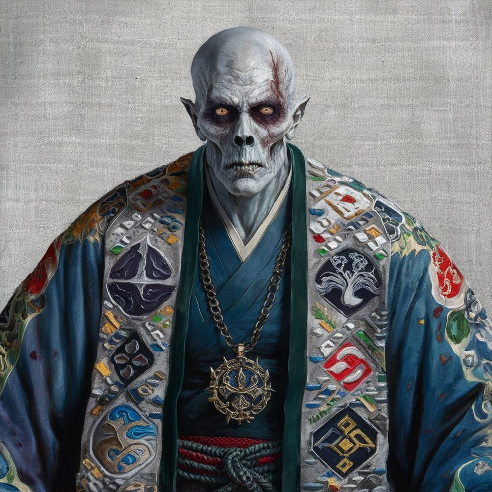
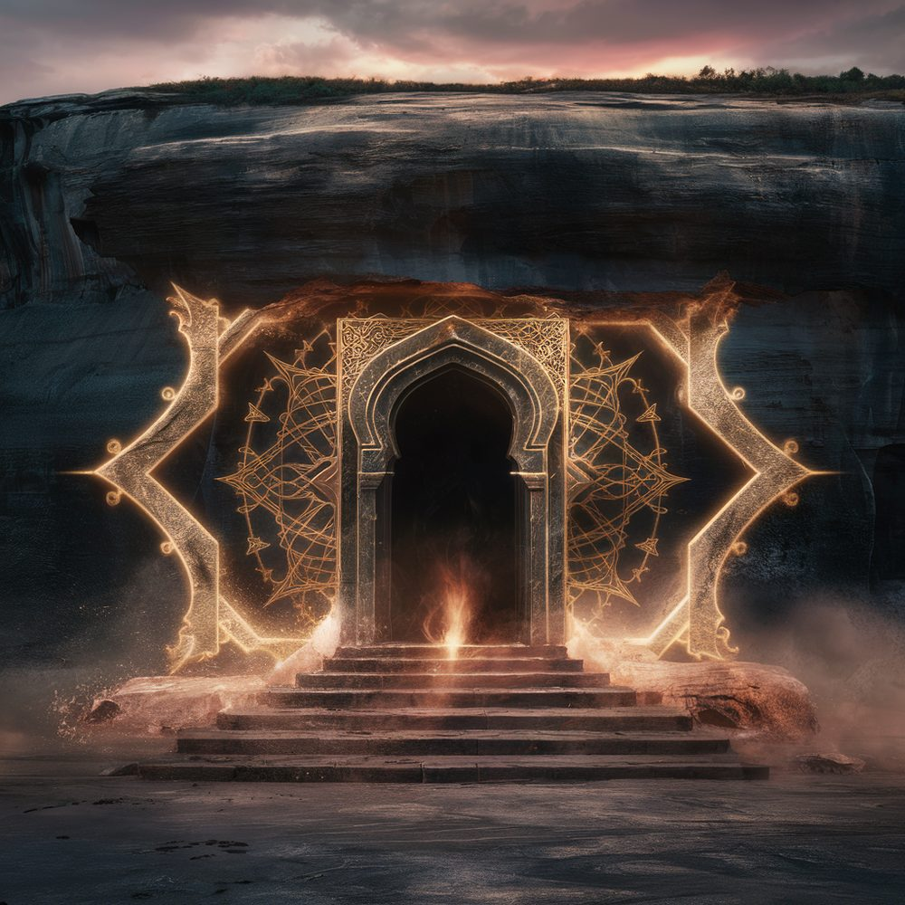

Arianell
Arianell was a Grandmaster of the Arcane Order who died around 250 years ago, condemned by his peers to take his own life. His reputation in scholarly circles remains contested: an accomplished elementalist persecuted for impolitic warnings, or a paranoid magnate whose conspiracy theories nearly broke the Order from within.

Career
Arianell rose through the Arcane Order’s examination ladder rather than by patronage, and was elevated to Archmage in the period after Cadfael the Lame’s abdication. His specialism was elemental magic, particularly the binding of efreeti and the construction of permanent earth-bound golems. He maintained a private menagerie of bound elementals at his estate and was widely held to be the most accomplished elementalist of his generation. Surviving inventories of his trophy hall list the skull of the dragon Elderbreath, which Arianell killed in single combat to settle a wager about elemental dominance. The wager’s terms are not preserved.
His promotion to Grandmaster — the senior magisterial title under the Sovereignty, distinct from the Archmage-Sovereign itself — came over the published objections of Archmage Dilwyn, whose feud with Arianell shaped the next two decades of Order politics.
The conspiracy claim
In the latter part of his career, Arianell came to believe the Arcane Order had been deeply infiltrated by a coordinated Faerie–Giant conspiracy: that archfey were directing rivals against him through dream-influence, and that the steady arrival of giants on the western frontier was not migration but slow invasion. He published a sequence of memoranda accusing named archmagi of subversion and demanding the elemental fortification of the Order’s borders.
These memoranda were dismissed at the time as proof of his deteriorating mind. With hindsight some historians have judged him prescient — the open Giant invasion under Sky-of-Rain began roughly thirty years after his death — and a small but persistent rehabilitation literature argues he was suppressed for telling an inconvenient truth. Mainstream scholarship still treats the Faerie portion of his claim as paranoid embellishment.
Arianell’s response to peer disbelief was to engage Giant mercenaries directly, paying them out of his personal estate to garrison sensitive Order sites. The introduction of armed non-Order forces into Order infrastructure by a sitting Grandmaster is what finally united the council against him.
Condemnation
The proceedings against Arianell were unusual in being public. Dilwyn sat as accuser. The sentence was the rarely-imposed elemental cessation: the condemned was required to take his own life by elemental means in the presence of witnesses, and to provide the obelisks for his own tomb. Arianell complied. His final words, recorded by the Veil observer present, were: “Disappointment is the only weapon left to me. I bequeath it to my colleagues.”
The tomb
The tomb’s location is not common knowledge. Documents in the Cloud-Capital archives describe a sealed sepulchre guarded by four obelisks — one each for earth, air, fire, and water — and a sequence of elemental puzzle-rooms designed by the condemned himself.

The antechamber bears the inscription: “Here lies Arianell, Grandmaster of the Arcane Order, commander of the ingredients of reality, whose only sin was to dream too grandly and see too far, condemned by his peers to bring his own life to cessation. The elements themselves will guard his rest.”
Whether the obelisks have ever been deactivated is not known. Treasure-hunters who claim to have located the site have a poor record of returning to substantiate their claims.
See also
- Arcane Order — the magocracy he served as Grandmaster
- History of Moonrise — the Arcane Order
- The Cloud-Capital
- Cosmology — the elemental planes